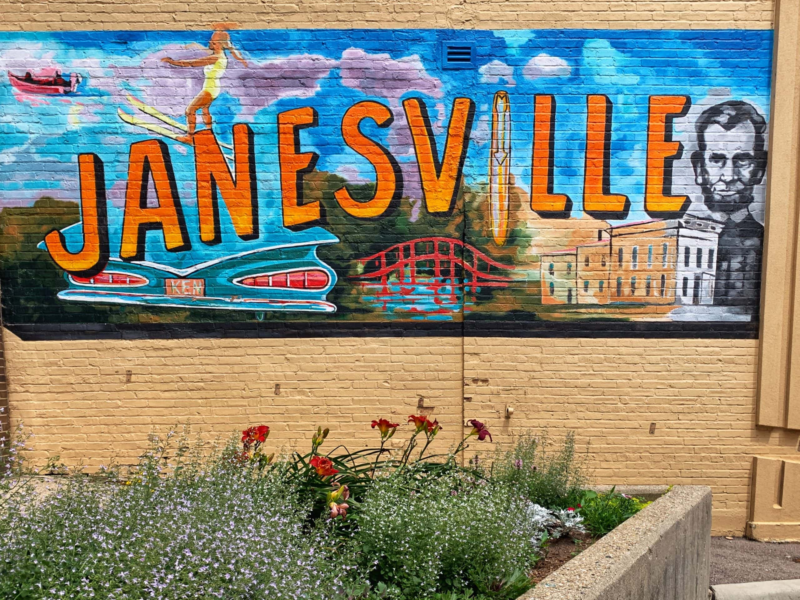

Moving to Janesville, WI: Your New Home Awaits
Welcome to Janesville, Wisconsin, a thriving city in the heart of Rock County that beautifully balances its historic roots with a modern outlook. Located along the picturesque Rock River, Janesville is known as "Wisconsin's Park Place" thanks to its stunning parks and green spaces. Whether you're moving for career opportunities, family life, or a change of scenery, Janesville provides a warm, welcoming community and a high quality of life.
Why Chose Janesville?
Janesville offers the perfect mix of small-town warmth and big-city conveniences. With a population of approximately 65,000, this city provides all the amenities you need without the hustle and bustle of a large metropolis. Here’s what makes Janesville stand out:
- A Rich Historical Legacy. Janesville is steeped in history, with roots dating back to the early 1800s. The city boasts a number of historic districts and beautifully preserved architecture that tell the story of its development. The downtown area, in particular, has been revitalized to celebrate its past while incorporating modern businesses, shops, and eateries. The Lincoln-Tallman House, a Victorian mansion where Abraham Lincoln once stayed, is just one of the many historical sites you can explore in Janesville.
- Thriving Economy. Janesville’s economy is diverse and resilient, offering job opportunities across various sectors. Historically known for its automotive manufacturing, the city has evolved and now supports a range of industries, including healthcare, education, retail, and agriculture. Major employers like Mercyhealth, Blain's Farm & Fleet, and the Janesville School District play vital roles in the community. For those seeking work-life balance, Janesville’s proximity to larger cities like Madison and Milwaukee makes it easy to commute while enjoying a more relaxed pace of life at home.
- Outdoor and Recreational Activities. Janesville lives up to its nickname, "Wisconsin's Park Place," with over 2,500 acres of parkland and a vast network of trails. Whether you're an outdoor enthusiast or simply enjoy a leisurely stroll, you’ll find plenty to do here. The Rock River provides opportunities for boating, fishing, and scenic riverside walks. Rotary Botanical Gardens, a 20-acre non-profit botanical showcase, offers a tranquil retreat with themed gardens that reflect the city’s commitment to preserving green spaces.
Exploring the Neighborhoods
Janesville is a city of diverse neighborhoods, each offering something unique. Whether you’re drawn to the historic homes in Courthouse Hill, the suburban comfort of neighborhoods like Harmony Grove, or the newer developments that offer modern amenities, there’s a place for everyone in Janesville. The city’s well-planned neighborhoods are designed to foster a strong sense of community, with schools, parks, and local businesses within easy reach.
Interested in Moving?
Choosing Janesville means embracing a city that values its heritage, offers economic stability, and provides a wealth of recreational opportunities. With a welcoming community, excellent schools, and affordable living, Janesville is more than just a place to live—it’s a place to thrive. Whether you’re looking to start a family, advance your career, or enjoy your retirement, Janesville has everything you need to make the most of your next chapter. Get in touch with us today to learn more about what Janesville has to offer and how we can help you make your move.